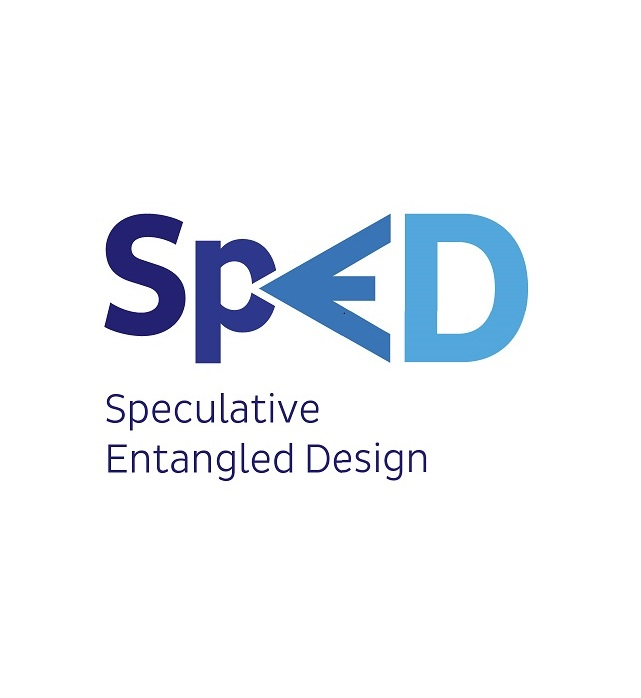

O SpED (Speculative Entangled Design) é uma abordagem de design criada no contexto da tese de doutorado de Marcelo Loutfi, voltada para a construção crítica, reflexiva e responsável de tecnologias em ecossistemas sociotécnicos complexos. Diferente de abordagens tradicionais centradas exclusivamente na eficiência funcional ou na experiência do usuário, o SpED parte do entendimento de que tecnologias nunca operam de forma neutra ou isolada. Elas participam ativamente da reconfiguração de relações sociais, práticas institucionais, dinâmicas de poder, comportamentos, formas de cuidado, processos de exclusão e modos de existência que emergem das interações entre humanos e não humanos.
Inspirado em teorias contemporâneas do emaranhamento sociotécnico, como a Teoria Ator-Rede, o Realismo Agencial, o Realismo Especulativo e a Pós-fenomenologia, o SpED propõe uma perspectiva pós-antropocêntrica para o design de Sistemas de Informação. Nessa perspectiva, algoritmos, inteligências artificiais, plataformas, infraestruturas, dados, dispositivos e instituições deixam de ser tratados apenas como ferramentas neutras e passam a ser compreendidos como participantes ativos dos ecossistemas sociotécnicos.
Tecnologias, pessoas, instituições, dados, infraestruturas e algoritmos são compreendidos como participantes de ecossistemas sociotécnicos em constante transformação.
A abordagem amplia a imaginação sociotécnica das equipes ao explorar futuros possíveis, plausíveis e desejáveis antes que seus efeitos se consolidem.
O SpED apoia decisões de design mais conscientes, sensíveis a riscos emergentes, vulnerabilidades, controvérsias e oportunidades de inovação responsável.
O principal objetivo do SpED é apoiar equipes na exploração de futuros possíveis, plausíveis e desejáveis, antecipando implicações sociotécnicas antes que elas se consolidem no mundo real. Em vez de atuar apenas na resolução imediata de problemas, o SpED amplia a capacidade de reflexão estratégica e crítica das equipes, permitindo identificar riscos emergentes, controvérsias, vulnerabilidades, efeitos colaterais e oportunidades de inovação socialmente responsável.
A abordagem estimula processos colaborativos de especulação, construção de cenários futuros, análise de impactos e reflexão ética, auxiliando organizações, universidades, laboratórios de inovação e equipes de desenvolvimento a tomarem decisões mais conscientes em contextos marcados por incerteza, transformação digital acelerada e crescente complexidade tecnológica.
Ao integrar imaginação sociotécnica, pensamento crítico e design orientado ao futuro, o SpED posiciona-se como uma abordagem inovadora para apoiar o desenvolvimento de tecnologias mais responsáveis, sustentáveis, inclusivas e alinhadas aos desafios contemporâneos da sociedade.
Conheça o ToolkitCopyright © FutureEntangled Toolkit. Todos os direitos reservados.
Criado por Marcelo Soares Loutfi. Distribuído por SaLT